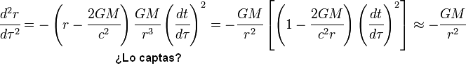

De: La Frikipedia, la enciclopedia extremadamente seria.
De: La Frikipedia, la enciclopedia extremadamente seria. De: La Frikipedia, la enciclopedia extremadamente seria.

|
ATENCIÓN Este artículo debería separarse en varios artículos. Ya que o bien habla de varios temas a la vez o que contiene definiciones o es tan extenso que debería ser dividido. Así que discusión del artículo. Y no olvides desambiguar después. |

|
Este artículo necesita ser ilustrado. Busca una afoto en nuestro depósito de imágenes o donde sea y ponla, pero que no sea pr0n, que se cabrea el señor del adSense y nos corta el grifo de los dólare. Y sin dólare no hay servidor... |
Pokémon Online (ポケモンオンライン Pocket Monster Online, PO) es un simulador de batallas Pokémon (sí sí, SIMULADOR) programado con los pies por un grupo de guiris violabuelas-otakus con el objetivo de convertirse en la comunidad competitiva de Pokémon más importante para imponer sus ridículas normas, y exterminar a los hablantes hispanos baneándolos por hablar en el chat de sus servidores en nuestro loable idioma nativo. No obstante, aunque todos somos conscientes de que nos van a sacar cosas baneadas como les salga de la polla, seguimos jugando allí porque siempre podemos cagarnos en sus muertos e irnos tan tranquilamente.
Debido a su gran cantidad de idiotas que entran todos los días preguntando como entrar a un maldito torneo, entrenadores de todos los sitios del mundo sienten el llamado de unirse a esta pequeña comunidad pokemon para mejorar sus habilidades de maestro pokemon y poder convertirse en todo un campeon. Actualmente existe la versión 1.053 luego de 755X1023452 actualizaciones que semejante mierda ha tenido y que aun sigue teniendo errores. Debido a la su influencia de users tiranos, n00bs, frikis, papys y demás, el PO ha llegado a tener las 5 generaciones de pokemon, ser multiplataforma , la muy mierda tiene traducción en 11 putos idiomas incluyendo el Chino simplificado y para más joder se puede jugar hasta en la plataforma Android. Junto con esto los malditos servidores del PO se saturan de puros n00bs que lo único que saben hacer es hacerse pasar por “pros”. Historia de Pokemon Online. Todo inició una oscura tarde del mes de octubre del 2009, cuando un friki desgraciado se le ocurrió crear un nuevo simulador de pokemon, este ser repugnante es un sucio francés quien desde hace mucho se le conocía como “coyotte508”. Con la ayuda de otros users sin vida iniciaron la creación del PO en versión beta, próximamente se darían cuenta que su jueguito mierdoso iba a comerse a otros simuladores como el shoddy que estaba bajo el poder de somojon y a buen netbattle, el cual era muy preferido por muchos de los users de la old school. Asi inicio la salida del Pokemon online con mas bugs que el culo de su propio creador. El primer servidor en la lista fue el Beta Server que luego se convertiría en el server mas poderoso y tirano de todo el juego. Este servidor bajo el nombre de Beta server tenia a penas 2 users mientras que en el netbattle existía una era de terror, tirania, odio, mucho odio, terremotos entre otro desastres naturales. Lo que nadie sabia es que la creación de este nuevo simulador pronto iba a acabar con la vida de todos los frikis que aun jugaban al netbattle. Poco a poco la profecía descrita por los antiguos incas fue cumpliéndose, el Pokemon online dio un crecimiento nunca visto en las alzas de noobs mientras que el netbattle iba decayendo en sus users, poco a poco estos disminuían, coyotte508 tenia sueños húmedos muy seguidos por continuar creciento su dominio y asi incrementar su poder sobre los pobres users del nuevo Pokemon Online. Aquí fue el momento en que los servidores del netbattle comenzaron a ser destruidos por los ataques “DoS”, entre uno de ellos el server de una usuaria friki con el Nick de Leafeon la cual con sus amiguitos no querían mudarse al nuevo y poderoso PO. Estos finalmente terminaron cediendo sus fuerzas y su server fue eliminado de la faz de la tierra. El Pokemon Online estaba en su momento de llenarse de poder con casi 100 users en el primer servidor, aun asi muchos se quejaban de los bugs que tenia y preferían irse al shoddy aun siendo este, una perfecta mierda. Claro, los jugadores no dejarían que una mierda como el shoddy battle arruinaran su sueño de convertirse en un maestro pokemon decente e ignoraban el mal diseño del shoddy para dar sus batallitas en el servidor de smojon. Hasta el momento el poder hispano no había tocado ni saboreado al Pokemon Online, hasta que un grupo de newbies sin vida hicieron un servidor, el cual fue por hosteado por su excelentísimo jugador aun viviente Lucho Kabron quien daba host 48/7. Sin embargo el servidor tenia un poco crecimiento por parte de los usuarios hispanos asi que poco a poco este fue abriendo menos hasta que un dia cerró. Esto dio paso al servidor de Pokemon Project el cual tuvo la mayoría de usuarios hispanos por casi 6 meses, era un server mierdoso, no existía la equidad de género, había desesperación entre los usuarios, muertos todos los días, etc.. Fue aquí cuando un negro frikaso entra al campo de los servidor, este antes conocido como [Aura] Jc, decide abrir un servidor en el PO ya que su servidor la maskó en cierto momento en el Netbattle, este maldito negro mugroso le quito el poder de los users al servidor de Pokemon Project hasta que este se volvió el server hispanos mas grande del Pokemon online con sus 68-80 users conectados por día el cual fue conocido como Zona Anal(Aural), este servidor acabo con la vida de muchos usuarios que venían a divertirse un momento, con sus raras tiers, sus malos scripts y lo peor aun… su hoster quien era y sigue siendo un negro acosador y fornicador que se la pasa jugando en el primer servidor intentando reunir puntos y según el tener el mejor clan de todo el Po junto a sus amiguitos nuvs que se la hacen pasar por pro’s, de este tipo asqueroso hay mucho mas que hablar, sin embargo pronto daré una descripción de cada uno de estos usuarios que han hecho de la vida del Pokemon online un definitivo y gran pedazo de mierda.
El servidor muy conocido como Zona anal tuvo una gran cantidad de usuarios para la época en que estaba aun el jueguito mierdoso, sin embargo su hoster era una mierda lo que hizo que el servidor poco a poco fuera bajando su cantidad de users, ya que la novia/o de JC (luego se hablara sobre ella) no podía hostear por la noche porque sus papis le metían los dedos por el ano si la descubrían, asi fue como el servidor ya casi no abrir y muchos usuarios decidían ir a otros servidores, aparte de que el servidor era una completa mierda iniciando por sus auths los cuales por alguna casualidad la mayoría eran chicas disfrazadas de hombres a quienes el famoso negro friki Dark eeveon(alias JC/dark peneon) acosaba por pm para tener control sobre ellas y luego bailarles por cam. Hasta que finalmente una perra con el Nick de erza, le hizo caso al pobre negro sucio y decidió hacerse su novia, aunque en la actualidad sabemos que no era mas que un hombre tratando de trolear al pobre de dark eeveon, esta tal Erza cambio su Nick a [Aura] Shade para que su “novio” le creyera que era en realidad una chica, era una relación muy rara y traumante a la ves pero poco a poco se fue notando que la muy estúpida de Shade se estaba cansando de que Eeveon no le metiera los deditos negros por el ano y busco a alguien mas para que lo hiciera por lo que dejo a Eeveon y se fue al servidor de Pokemon España. Ahí fue donde Zona Anal tuvo su baja de users, el server se hizo mierda y ya casi no abria, los pobres users no tenían a ningún lado donde ir hasta que vieron que el pequeño servidor de Pokemon España estaba a su opción. Estos poco a poco fueron incrementando la cantidad de users de Pokemon España hasta que finalmente este llego a tener muchos users por dia. El servidor de ZA aun abrir pero mucho menos que antes y ya casi nadie entraba mientras que Pokemon España aun no tenia mucha experiencia en cuanto a la administración del servidor. En cuanto al maldito server Beta de los gringos, este tenia una altísima cantidad de users que ni el shoddy ni el netbattle juntos hubieran llegado a tener. El servidor de pokemon España fue mejorando pero lastimosamente su hoster “El NEGRO” no podía estar mucho y fue dándole el servidor a otros idiotas nuvs que luego le quitaron la moderación del servidor y esto y mucho mas hizo que el servidor fuera perdiendo sus usuarios y dio paso a la nueva era del PO hispano, la cual fue con la entrada del humilde servidor de Pokemon mexico creado originalmente por un mexicano gay llamado “Rambo” y sus amiguitos “Ernesto” “Kyoru” “Alan” “Spider476” quien era un putazo de casi 30 años que solia pasarse por el server de vez en cuando y otros users mas. El servidor en un inicio tenia pocos users ya que muy pocos lo conocían pero mientras España caía este fue obteniendo más y más usuarios, aquí entra el gordo friki de DKW Lider Bakura que un inicio tenia un servidor mierdoso llamado Dark Killer Warrior donde solo el, su puta amiga DW Peach, Dw Xavier y Jazz entraban. Así fue como este gordo friki decidió sobornar al pobre de Rambo con hostearle casi 24/7 y asi este tuvo el poder del servidor que pronto seria el mas grande a nivel hispano en el Pokemon Online, y así se hizo, poco a poco este servidor llamado anteriormente Poke Mex tuvo una gran popularidad y hasta el dia de ahora sigue abriendo sus puertas a los putos jugadores hispanos para que puedan conseguir su sueño de ser el mas mejor maestro pokemon de la tierra aun con sus sucias tiers smogonianas, sus auths tiranos, y sus scripts de tienda que tan solo son para que los users crean que ganan dinero de verdad y sigan llenando el server y asi tener mas control y soberanía sobre todo server que se le oponga, ya que a diferencia de otros es el servidor que mas tiempo ha durado online con casi 1 año y medio de vida. Sin embargo a muchos usuarios no les parece el ambiente sucio, satanico y tiranico de Pokemon Mexico y crearon otro servidor llamado Pokemon Love, donde normalmente se encuentran gente pendeja, friki, nuv(si quieres hacer ranking y ser el mejor maestro pokemon del mundo deberías entrar a jugar ahí), estúpida y repugnante, este asqueroso lugar fue abierto por el tipo raro que se cree gato llamado Yesua, quien es alguien incomprensible como todos los de su server, al igual que los demás luego se hablaran muchos elementos significativos sobre el. Así hasta el día de hoy esta la jerarquía en el jueguito de Pokemon online, aun asi hay otros servidores que intentan superarse sin tener un mayor logro como Pokemon Chile, Pokemon Alma, y otros servers mierdosos que no pasan de 10 users. En cuanto al servidor principal del PO ahora conocido como Pokemon Online server el cual ha llegado a tener una cantidad impresionante de frikis sin vida, se ha convertido en un lugar donde la tirania abunda hasta por el culo del hoster coyotte508, ya que su plan origen se llevo a cabo tal como los incas habían predicho. Así es como termina esta humilde historia del Pokemon Online quien hasta el dia de ahora es el mas utilizado entre los usuarios amantes de pokemon.
La mecánica para jugar al PO es muy simple, pero hay que seguirla paso por paso para obtener los resultaos deseados. Lo primero pero no por ello más importante es tener una silla. Las mejores son las giratorias, ya que permiten al jugador dar vueltas cuando hagan una predicción acertada y se motiven. No es obligatorio, pero bastante recomendable, ya que es importante relajar los músculos del cuerpo para centrar toda la sangre y la energía en el cerebro durante un combate. De igual manera, no es conveniente practicar la masturbación a la vez que se lleva a cabo un combate, por los motivos que acabo de mencionar. El siguiente paso, es obtener una Coca-Cola y una bolsa de patatas fritas, o en su defecto, algo salado para picar, como Kikos. En caso de no haber Coca-Cola, nunca recurrir a la Pepsi, ya que de esta forma el cerebro rendirá menos, incluso negativamente en algunos casos. Una vez tenemos todo listo, nos sentamos delante del ordenador en una postura adecuada, que además de manetener la espalda recta y erguida favorezca a la concentración. Abrir el Pokémon Online.exe previamente descargado de su página web oficial, y seleccionar la opción Team Builder. En la mayoría de los casos, los jugadores no tardan en hacer un equipo porque simplemente copian y pegan el siguiente:
Tyranitar, Excadrill, Gliscor, Ferrothorn, Latios, espacio libre
Y de esa manera se puede hacer un equipo sin esfuerzo ni méritos propios. Bien, una vez tenemos nuestro lamero equipo, entramos en la opción "Go Online". Aparecerán la lista de servidores disponibles, que aunque se llamen servidores, no os van a hacer ni puto caso. Para conocer a fondo cada uno de ellos, ver la lista de servidores y su descripción en este mismo artículo. Una vez estamos dentro, vamos a ver cada una de las opciones que nos brinda este simulador de batallas:
Archivo: No me pararé a explicar a qué se debe tal nombre ya que carece de sentido. El caso es que desde aquí podemos cargar y modificar nuestro equipo. Como sólo vamos a usar el equipo mencionado anteriormente (mientras siga de moda, claro está) podemos olvidarnos de esta opción.
Estilo: Como bien dice el nombre, aquí indicamos nuestro estilo de juego. En nuestro caso, deberemos poner "Lamero".
Buscar Batalla: El principal atractivo de este simulador es, aparte de que puedes lamear fácilmente, la facilidad y rapidez con la que encuentras un combate, haciendo uso de esta opción.
Una vez le damos a buscar batalla, esperamos 0'0024 - 0'0025 segundos a que aparezca alguien para jugar y entonces vamos a la cocina, nos hacemos un té, nos ponemos una bata etc, miramos detenidamente el equipo del rival, lo apuntamos en un Bloc de notas y le damos a aceptar, si es que el jugador aún sigue ahí esperándonos.
Existen una serie de protocolos utilizados tanto por guiris como por hispanos, los cuales tenemos que conocer para entender lo que nos están diciendo:
-__-: El número de barras bajas que puede contener no está determinado, puede ser cualquiera y depende de varios factores como la frustración que quiera expresar nuestro contrincante ante algo que no les guste aunque no tengan razón, por ejemplo cuando tu Pokémon resiste un ataque con pocos HP y ellos pensaba que le dejaría KO, aunque realmente no lo tenían calculado y el error fue de ellos.
srry: Cuando recibes un ataque de hax cuando ibas ganando, automáticamente saltará ese mensaje en el chat del combate. Sin embargo, no esperes que el contrincante te de la victoria para demostrar que no le parece justo, pues aprovechará y te meterá una paliza si es posible.
fuck u: Significa "Fuck You", que en español viene a ser "Que te follen". Es la reacción de los guiris ante un owned total, cuando veamos este mensaje en una situación así podemos calificar al contrincante como un jugador "llorica" (ver clases sociales más abajo).
Stoopid Mexican: En ocasiones ya hemos visto a un guiri le puede dar la gana quejarse de absolutamente nada y decirnos Fuck you por las buenas, en el caso de que le respondas en español te llamará "Stoopid Mexican", independientemente de si lo eres o no, y te dirá que le hables en su idioma. En estos casos, se debe utilizar el protocolo "tu me has hablado en tu idioma y yo en el mio, asi que me comes la polla guiri de mierda".
a_a: Una "cara" que no hay jugador hispano en todo este programa que no la use. Es la cara más pegajosa en todo la comunidad hispana, e incluso hay leyendas que cada vez que alguien la usa, a un niño le da cáncer, aún así la gente no deja de usarla como si mañana fuera el último día de vida. Se cree que podría explicar el significado de la vida, e incluso la creación del universo y múltiples misterios con sólo una A antes o después del guión. Su forma de escribirla puede ser expresada con la siguiente fórmula matemática: = a_a
Esta cara, es una droga para muchos
LLOS: Al igual que el “a_a” el “llos” es una forma de vida, con la única diferencia que este fue enviado por los antiguos dioses legendarios de otra dimensión, por lo que tiene un significado astral aun no definido por ninguna rama de la ciencia, pero para muchos le significado de “llos” es simple y sencillamente: llos. Dato dinosaurio: en el programa de chat MSN "llos2" era el shortcut de un emoticon llorando.
Forteit: Es el protocolo más utilizado, cuando estamos ganando un combate sanamente en el PO, en el 70% de los casos deberemos estar preparados para un cierre brusco de ventana, lo que significará que nuestro rival no ha podido mantenerse en pie ante nuestro poder espiritual y se ha visto en la obligación de rendirde y abandonar la batalla.
8====D:Este es una clase de "cara" que se utiliza mucho en PO... En realidad, no hay casi nada de decir de este protocolo, ya que simplemente y sencillamente es una polla.
En pos de la exterminación de los Noobs en el mundo del Pokémon Online, se crearon una serie de reglas para erradicarlos. Sin embargo, resultaron ser una especie más adaptable de lo esperado, y rápidamente fueron capaces de moldearse a estas reglas y putearnos de otras maneras a los jugaodores normales. Estas eran:
Es la última novedad implantada en el PO, que en lugar de desfavorecer a los Noobs les favorece, permitiéndoles ver tu equipo antes de empezar un combate y quedarse un minuto entero apuntándolo en el bloc de notas.
Significa que no puedes dormirte en medio de una batalla, porque es una situación francamente desagradable para el contrincante, el cual tiene que joderse y perder cinco minutos de su vida esperando que le den la victoria automática.
Significa que está prohibido usar a Freezer como si fuera un Pokémon, una estrategia que se hizo muy común entre los Noobs, ya que de una Onda Destructiva hacía OHKO a todo tu equipo sin ningún esfuerzo, y de paso al contrincante también lo mataba delante de su ordenador.
Esta regla impide que el rival diga "Oh, KO" cuando le hagas KO a uno de sus Pokémon, por la simple razón de que en todos los combates hay como mínimo 6 KOs y puede llegar a ser muy molesto que cada vez que haya uno aparezca esa frase en el chat.
No se puede jugar con gafas. Si un Latios con unas gafas ya es capaz de meter unos Cometa Draco de la ostia, nos podremos imaginar qué pasará si el mismo jugador se pone unas gafas orteras y lucha contra nosotros. Además de que es una situación ciertamente ridícula para él, y para nosotros porque tenemos que jugar con el miedo de que nuestro rival sea un friki con unas gafas amarillas con cristales rojos en forma de estrellitas.
Al igual que con las gafas, lo mismo puede hacer el rival equipándose a él mismo una Vidasfera y jugando contra nosotros, con resultados desastrosos tanto para nosotros como para el pobre chico que sacrificará una parte de su vida sólo para hacernos ataques más fuertes.
Significa que tu Pokémon no puede evadir al adversario, que en realidad es muy fácil, sólo tienes que moverte a un lado cuando haga Lanzallamas, o llamar al Pokémon, pero así no tiene ni puta gracia.
Como entre los creadores del PO también existe algún que otro noob (por no decir todos), crearon esta norma para contrarrestar la Sleep Clause, permitiéndoles dormirse en una batalla o simplemente amargarte el día quedándose sin mover eternamente para pagar sus problemas contigo y obligarte a cerrar la ventana y perder puntos.
Impide que el jugador contrincante se suicide en medio de una batalla, ya que al igual que con la Sleep Clause, es una situación incómoda en la que te tienes que quedar esperando 5 minutos para que se acabe el combate y ganes automáticamente.
Nueva reglilla de los jugarosetes que se aburrieron de las tipicas reglas de ventajas por tipos y las ponen a la inversa. Haciendo mamadas como que todos sean debiles a su mismo tipo a excepción de Fantasma y Dragón.
El hax, es una fuerza sobrenatural que se manifiesta en algunos combates. Después de mucho investigar, pensar y reflexionar, se ha llegado a la conclusión de que se trata de una fuerza divina fuera de nuestro entendimiento que favorece únicamente a los más necesitados, es decir, los Noobs y Lameros, que en estos casos, se convierten en una especie nueva llamara Haxeros. Estas pequeñas ayudas divinas consisten en congelar un par de Pokémon del enemigo durante 10 turnos, hacerle 15 flinchs seguidos con un Jirachi a un Heatran y matarlo a base de Iron Heads, o hacer un golpe crítico que en lugar de quitarle un 2o% le quita el 100% de sus PS.
Por mucho que lo hemos intentado, por muchas reglas que hemos impuesto para contrarrestarles, esta es el arma principal de los Noobs y a la vez más poderosa, y por muy buenos que seamos no podemos luchar contra la hax.
Ya que el juego en Pokémon Online se basa en el copypasteo mutuo, existen una serie de Pokémon determinados con los que se componen absolutamente todos los equipos:
Tyranitar: La gente de Japón dejó de tenerle el mínimo miedo a Godzilla, entonces este, llorando como una niña, fue corriendo a los estudios de Game Freak pidiendo a la gente de Game Freak que lo hicieran como un Pokémon para que siga siendo el temible que antes era. Pero estos fallaron, y lo único que lograron hacer era una roca mohosa que lo único que sabe hacer bien es tirarse pedos de arena y tirarlos a todo el campo de batalla.
Ferrothorn: Es una pobre castaña que no pudo encontrar su lugar en la sociedad de castañas debido a su extraño color, lo que le creó un fuerte trauma social que le impulsó a convertirse en un Pokémon, ya que en los combates a nadie le importa lo feo que seas. Sin embargo, también resultó ser un pobre fracaso en los combates, ya que sólo es capaz de tirar púas y piedrecitas en el suelo y cuatro cosas más.
Dragonite: Al igual que Ferrothorn, origialmente no era un Pokémon sino el dinosaurio Barney, que para estar más cerca de los niños sin levantar sospechas se convirtió en un Pokémon. Como los pedófilos no son fuertes en la mayoría de los casos, tuvo que inflarse de anabolizantes para tener un ataque de la ostia, pero como es tan obeso sigue siendo lento, y por su naturaleza de dinosaurio es bastante resistente.
Scizor: Anteriormente conocido como Iron-man, un día estaba jugando en su laboratorio con un caldero gigante de magma y en un descuido se le derramó encima y se quedó pegado permanentemente a su armadura, convirtiéndose en Scizor. Como su ataque bajó a la miserable cantidad de 130 de poder base decidió convertirse también en un Pokémon.
Excadrill: Es un topo muy poderoso pero más lento que su abuela. Sin embargo, cuando llega una Tormenta de Arena se motiva y se convierte en OHKOman, una capacidad de la que los lameros han sabido aprovecharse muy bien.
Latios: Este Pokémon es un ser místico con forma de miembro, que después de recibir una patada giratoria de Chuck Norris en el pecho (que además le dejó una marca visible) decidió que sería el Pokémon más hijo de puta del mundo. Por desgracia sus planes fallaron porque los de Smogon lo banearon. Pero ahora está libre de nuevo, al acecho de equipos que no tengan un Heatran para fundirlos a base de Draco Meteors...
Heatran: Se sabe que es un Domo Lava, pero como nadie sabe qué cojones es eso se dice que es un Sapo. Sí, un puto sapo que un buen día ingirió una gran cantidad de fuego y magma y se convirtió en un sapo de magma y acero dopado que lanza llamaradas por la boca. Así es la vida, así es Pokémon.
Gliscor: Según cuenta la leyenda, un niño de diez años consiguió un Gliscor en su juego nuevo, y por motivaciones desconocidas empezó a darle un Antídoto detrás de otro, creyendo que de esa forma el puto Koga no le envenenaría más a los Pokémon. El resultado fue un Gliscor de toda la vida que cuando es envenenado en vez de morirse se dopa, y encima no le puedes dormir.
Thundurus: Después de ser derrotado por Luffy en One Piece, el dios Enel bajó al mar azul en buscar de un lugar donde pudiera encajar un psicópata más rápido que un solo de Dragonforce, y que con una descarga puede matar a toda tu familia, y lo encontró en Game Freak.
El jugador profesional: Aunque son admirados por los Noobs debido a su gran cantidad de puntos, todo es debido a que se pasan 12 horas al día jugando ya que es lo único que por desgracia se les da bien. En la mayoría de los casos. En el resto de los casos, son el resultado de la copulación entre un Lamero y un jugador de clase media que da como resultado a un Lamero que juega más o menos bien, y aparenta ser un "pro".
El jugador medio: Es el espécimen que más abunda en los servidores del PO, suelen ser gente más o menos normal tirando para frikis que saben jugar bien, unos más que otros. Cuando uno de estos decide dejar a un lado su orgullo y autoestima y se convierte en un lamero, se convierte en lo que llamamos un Jugador profesional.
Noobs: Aunque no hay un motivo de peso para ello, son muy odiados porque no saben jugar y poseen una lamentable cantidad de puntos, ya que no pueden vencer ni a su abuela. Cuando esta clase de jugadores es objeto de la misericordia de dios, se convierte en lo que conocemos como Haxero.
Haxero: Aunque no es culpa de ellos, son más odiados que los Noobs y los Lameros. Son jugadores Noobs (generalmente) y en la mayoría de los casos guiris, que han recibido la bendición divina y son capaces de ganarte gracias a 2, 3, 4 0 9 golpes críticos en momentos importantes del combate, a congelarte a dos Pokémon a la vez o hacerte 10 flinchs seguidos por las buenas.
Lameros: Son los jugaodres cuyo equipo favorito es, actualmente, Tyranitar + Excadrill + Gliscor + Ferrothorn + Latios, se dedican a aprovecharse del bajo coeficiente intelectual que poseen los administrados del PO para utilizar cosas tales como Deoxys Normal o equipos con Llovizna y Nado Rápido.
El challenger compulsivo: Son personas que padecen de un fuerte tic en el dedo índice y a las que debemos respetar, si tenemos la mala suerte de que en el momento que les llegue el tic nos iban a retar, nos saltarán 500 ventanas del mismo tío retándonos. Hasta que no pare, no podremos darle al botón ignorar y tendremos que jodernos.
Lloricas: Son generalmente niños de 10-12 años que no ganan ni para atrás y se sienten en la necesidad de lloriquear para que parezca que son unos desgraciados a los que siempre haxean y todo el mundo quiere hacerse equipos específicamente para vencer al suyo.
Guests/Plaga: Meses despues de que todo PO acabara con la plaga de "Numerillos" (Sus nicks eran puros numeros) La plaga Zombie ha vuelto con el nombre de Guest. Estos generalmente son gente que se conecta desde Android sin conocimiento alguno sobre como cambiarse de nick. Se dice que es una secta que planea controlar el mundo.
A continuación se mencionan algunos jugadores hispanos y españoles del Pokemon Online a quienes se les reconoce por sus mamadas cometidas a lo largo de estos 3 años, aquí se incluye una pequeña historia de ellos. Jugadores/Frikis.
Alias: Perra mierdosa, Dario, Ulisses, Madame Bobary, Ramera sin vida, Gorda estúpida Iniciaremos con esta, introduciéndonos un poco a su vida mierdosa, podemos decir muchas cosas sobre ella. Entre ellas destaca que hay que admitir que es buena jugadora aunque muchos sabemos que sus equipos son robados, aparte de ser una tremenda ramera, sucia, antisocial y sin vida que se la pasa jugando altas horas en este jueguito mierda, su identidad es desconocida pero según fuentes confiables es un hombre negro gordo y friki llamado Dario, asi como también se dice que en su vagina habitan los penes de users como Static, coco, Blue(Este ultimo en su ano) y muchos mas. Es una perfecta pendeja que le gusta hacer encabronar a los demás solo para hacerles saber que es mejor que ellos, no es muy recomendable hacerse su amig@ ya que puede morder y ser agresiv@, su Nick actual es [EG] Madame Bobary. En cuanto a su físico es lo peor que se puedan imaginar, para muchos es el opuesto de Dark Eeveon en su nivel de ser frikis, obesos y en cierta parte negros. En esta pendeja destaca que ha sido la perra de muchos jugadores del PO y que ha estado en la mayoría de los clanes hispanos que existen ya que en ninguna la quieren por su nivel de pendejez.
Alias: Dark Peneon, Extraterrestre negro, mierda negra, Negro mugroso, Cara de pene negro, mister popo(lol?), etc. Sobre este tipo tenemos mucho que decir. Iniciaremos desde sus inicios en el netbattle, el inicio con el Nick de Jc, luego creo un clan mierdoso que nadie conocía llamado Aura donde el único user que estaba en el era Rubex quien si ya tenia un conocimiento mayor al de eeveon en batallas, luego este tipo llamado Julio desapareció por un tiempo de este estúpido juego y se le perdió el rastro. Sin embargo años después volvió al PO con el Nick de [Aura] Dark eeveon también conocido como el acosador negroso, este tipo desde que entro al Pokemon online fue de lo mas repugnante que tu podrías imaginar. Muchas usuarias se quejaban de sus altos acosos, sacándole fotos, tratándoles con un exceso de cariño y mucho mas mientras que el solo andaba en búsqueda de una novia, hasta que finalmente cayó una pendeja con el Nick de Erza durante la era de Pokemon Project, luego esta cambio su Nick a Aura Shade, el clan de dark peneon había crecido mucho ya que tenia muy buenos jugadores de su parte, pero eso no les quitaba lo noob que eran aún. Sin embargo esta mierda asquerosa aún teniendo una supuesta novia seguía acosando a las pobres chicas sanas del PO, según rumores les sacaba cam por msn todas las noches. Hoy en día este sujeto es uno de los mas odiados en PO junto a Daniela por creerse los mejores jugadores de todo el juego, users pendejos como weiser, coco, Daniela y otros lo ofenden diariamente con sus ataques de racismo. Cabe mencionar que aparte de ser un tipo horroroso tiene un color de piel desagradable a todos los gustos con una forma amorfa. Este normalmente habita en el anuncio de Pokemon Mexico, es muy difícil diferenciarlo entre el anuncio negro por lo que requiere mucha concentración. Cambiando de tema este tipo anteriormente tenia wars con otros clanes como los hijos de puta de imperial donde finalmente terminaban puteandose con el malnacido de hantz, líder del clan imperial. Sin embargo estos dos eran y son muy parecidos por su inmensa estupides por lo que recomendamos no unirse a ninguno de estos clanes a menos que quieras acabar con tu vida de maestro pokemon, actualmente a dark peneon se le conoce como la contraparte negra de hantz.
Alias: Perra de eeveon, pendeja, transexual, rara, retrasada mental. Esta jugadora inicio jugando pokemon de la nada pero luego conoció al ser mas repugante de todos, Dark Eeveon, quien la llevo al lado oscuro(doble sentido), esta pendeja cayó en las garras negras de peneon, ahora se le ve raras veces conectada pero algunos que la tienen como amiga en el msn o face dice que luego de que el negro eeveon la dejara quedo con altos retrasos mentales y ha dejado de tener sexo con muchos. Mientras eran novios muchos decían que esta Shade era un hombre de 35 años negro, alto y con cáncer, pero luego se descubrió que era todo lo contrario, que era alguien muy linda, por lo que surgieron hipótesis de que como alguien asi puede estar tan ciega y tener un novio tan mierda como eeveon, de ahí sale la idea de que era un hombre, donde eeveion era troleado masivamente por algún user del PO, finalmente Shade decidió volverse una prostituta mas, como link, solo que con mas éxcito, algunos cuentan que sufre penetraciones anales diariamente.
Alias: 4 ojos, blanco demente, acosador friki 2, contraparte blanca de eeveon Al igual que el anterior, es un ser repugnante, siendo el líder de un clan que se podría decir que tiene buenos jugadores, su líder es el mas nuvaso de todos iniciando por como juega hasta su carácter mierdoso, intenta superar a eeveon sin poder conseguirlo, siendo un jugador que ya tiene sus años de jugar. Muchas jugadoras del PO lo han reportado como otro acosador sin vida al igual que eeveon, de menos magnitud pero tiene sus victimas como skyla y gabee a quienes en un momento atrapo en sus sucias manos blancas. Asi como el clan de dark peneon, no recomendamos que te unas a esta mierda que ahora mismo ha perdido mucha competitividad en todos los niveles y se ha vuelto un clan mierda como todos los demás.
Alias: Masturbador compulsivo, Pene de bebé, Hugo Chavez Frías, El niñero perdido de Timmy y Talia, Bolas mojadas. Muchos lo conocen por no ser más que un tirano sin vida. Dueño de Pokémon Mexico y máximo v̶i̶o̶l̶a̶d̶o̶r̶ ̶d̶e̶ ̶n̶i̶ñ̶o̶s̶ "Troller" de PO, es descrito cómo un ser despreciable, persona mala, que te causa diarrea, que se alimenta del sufrimiento de los servers pequeños. Su historia se remonta a la época en la cual, manipulando a aquellos Freaks que se la pasan 18 horas del día en la computadora, derrocó Zona Aural y abrió su servidor haciendo s̶e̶x̶o̶ ̶o̶r̶a̶l̶ pacto con el diablo. Todos los que son allegados a él, dicen amarlo por ser una persona "Graciosa" En cuanto a terminos de Matón y Bully se refieren, además, lamen el suelo por donde pisa, por creerle un santo, una especie de n̶i̶ñ̶o̶ ̶c̶o̶n̶ ̶p̶r̶o̶b̶l̶e̶m̶a̶s̶ ̶m̶e̶n̶t̶a̶l̶e̶s̶ ̶q̶u̶e̶ ̶s̶e̶ ̶c̶a̶l̶l̶ó̶ ̶d̶e̶ ̶l̶a̶ ̶c̶a̶m̶a̶ ̶d̶e̶ ̶b̶e̶b̶é̶ falso mesías. Su reinado de terror, llegó a su fin del mismo modo en el cual, él obtuvo su nada útil poder. La leyenda dice, que ahora vaga por las calles, pidiendo limosna y cobrando por sexo en las esquinas de los semáforos. Suele estar acompañado por su fiel e̶s̶c̶l̶a̶v̶a̶ ̶s̶e̶x̶u̶a̶l̶ mascota a quien llama "Rima".
Alias: Hazzmin, Chica fresa, Rara rosa Actualmente describirla es muy difícil pero se podría decir que es muy tierna, aunque a veces suelen excitárseles las hormonas y hacer cosas sin sentido, a parte de que es una chica muy fresa, llegó al PO como toda una nuv, sin embargo fue respetada por su modo de ser y llego a convertise en administrador a de pokemon mexico aun con su rareza y su odio a los gays (de lo que se debería avergonzar, vaya desprecio de persona).
Alias: Link mierdoso, pendejo, estúpido, mierda come picos, niña virgen, Ricardito el culerito, mierda negra, perra, perrita de static, esclava sexual, etc. Es un ser despreciable, es de los mas frikis y mierdosos del PO, no recomendamos interactuar con el por su alto nivel de radioactividad. Entro al PO como un gay despreciable y se retirara de igual manera, suele ser un objetivo del buen Static en todos sus kicks y bans, se dice que hace servicio sexual a todas las demás prostitutas del PO y se vende por una minima cantidad de dinero. Este putazo tiene relaciones intimas con mierdas como Andres Tello y Ayz de las cuales se sabe que en 4 ocasiones han tenido hijos, nuevamente recomendamos evitar interactuar con el a menos que quieras terminar como el. Es una bola de mierda negra.
Alias: Hijo de puta, FirulAyz, Perrita de Link, mierda odiable, perra estúpida, friki sin vida, mamador de vergas peludas, perraca, ofrecida, golfa, teibolera, entre otros 50 más. En la descripción anterior dijimos que Link era un tipo despreciable?, pues al parecer nos equivocamos, este hijo de perra se lleva el titulo del ser mas despreciable del PO, siendo un putazo de mayor nivel, se dice que tiene orgias con lesbianas y gays como Link y Andres Tello(quien sabe que con otros mas), además de decir puras mamadas en su facebook. Normalmente vive reprimido en una cueva, el y solo sus pokehuevos donde los entrena diariamente, el puto se conecta a PO con inter robado. Según fotos en internet sobre el muchos usuarios han especulado que es un ser gordo, peludo, estatura media y con un trozo de carne colgando de 3 cm, además que también dicen que usualmente va a MC Donalds a comprar cajitas felices solo para darse placer con los objetos sexuales que salen dentro de ella, como decíamos antes es un tipo asqueroso y sin vida, no debería existir en este mundo ni en ninguno otro. Últimamente se encuentra atrapado en el digimundo donde algunas fuentes informativas dicen que el líder final Penemon Lv.7219289712 lo folla todas las noches por lo que nunca ha podido escapar. En el fondo este sujeto es un violador, pedófilo, antisemita y racista aunque raras veces lo saca a la luz. PD: Es una perra por lo cual no recomendamos que tampoco mantengas una conversación amigable con el a menos que lo ofendas cada 25 segundos.
Alias: Imperial Neon, Perra sucia, a_a, enfermo Este usuario se puede clasificar como alguien muy especial. Especial por ser sumamente extraño, si alguna vez llegas a hablar con el notaras que en el fondo el quiere sexo, pero da a entender otra cosa, te puede volver loc@ con sus caritas de “a_a” y sus derivados, hablale bajo tu propio riesgo.
Alias: Blue, pene gordo, amante de dario, perra maldita, putona, Alfonso, Pico Albornoz. Este hijo de puta anteriormente acosaba a muchas jugadores pero luego de conocer a gente como dario sintió el deseo de tener sexo con hombres, se dice que ha tenido muchas orgias con gays y que disfruta que se la metan por la boca. Es una ramera sucia que solo se la pasa sin jugar la mayor parte del tiempo, sin embargo es muy bueno, por lo que se considera un maestro pokemon de altura. En su ano habitan los penes y vaginas de Daniela, eeveon, hantz, skyla, bakura, static, lucho, cyberodin, coco, weiser, poeta y lucho.
Alias: Lucha, Luisito, Lucy, Lucia, [Nexus] líder luis (lol), Folla negros, Amante de link, Chico emo, reggaeytonero, pinocho, Pinochet, narizon, luisnocho Este usuario se la pasa haciendo amigos en el chat de pokemon mexico, se dice que pasa altas horas masturbándose mientras juega PMU(un jueguito estúpido basado en pokemon mistery dungeon), animando a todos para que lo jueguen, tiene un lado friki muy fuerte. Antes el hosteaba somojon 48/7 pero por cuestiones de enfermedades decidió cerrar el servidor, ahora se reporta que el aun abre el servidor todas las noches, lo pone en privado, y empieza a hablar con el mismo. Es un sujeto muy raro que necesita mucha ayuda, si tu eres un buen samaritano y conoces a algún psicólogo/psiquiatra esperamos que te comuniques al siguiente numero: 1-800-001-184. Para poder resolver el problema de este pobre chico que solo quiere ser normal.
Alias: Amante de skyla, perra estúpida, mierdosa, negra amante de eeveon, follador de clítoris, Minerva milk, gordo obeso Es un frikaso gordo amante de putas como Daniela, blue, weiser, static, eeveon. Según la frikipedia, es un pendejaso que solo se la pasa ofendiendo a los nuvs que pierden contra el y a los pro que pierden contra el en Challenge cup, dando altas owneadas con una cantidad horrible de hax, es un ser odiado por miles por su gran poder pero sin embargo cae ante usuarios como kakashi fleto y link la putona. Según rumores era amante de skyla y tenia sexo anal con vienna.
Alias: Diox, andrekqnwdoiasndasfkasmfasasxs, andres la puta, perra de ayz y link, friki desesperado, amante y esposo de kirby Actualmente es el esposo de kirby, se le puede encontrar en su server mierdoso rpg teniendo altas orgias con ric_kirby(quien ya lo puteare), son una bola de gays y hacen de todo en su servidor de 4 users, a la misma ves le quema el culo a Ayz siéndole infiel con Link y teniendo sexo oral por via msn con los 3, son unos putazos de mierda, no se puede decir nada más.
Alias: Niña virgen, kirby la puta, ramera, sucia, pendeja, estúpida, Link 2, Andres tello 2, amante de otras 3 putas, lameculos. Es una mierda rosa y gorda, que hace altos scripts para su server pero sin tener ningún resultado ya que no pasan de 4 users, es una mierdosa bola de cada que no merece estar aquí. Se le confunde con otras putas como Link y Andres tello por beber mucha lechita de las tetas sagradas de Ayz. Sin embargo este lo niega y hace creer a los demás que es hombre y que aun tiene dignidad, cosa que hasta ahora sabemos que no es cierta. Es una perra ofrecida y esclava asexual de Static, no quiere dar auth ni aunque le den un pene mas grande que el de Morty.
Alias: Perra estúpida, rana mierdosa, pendeja, perra revolcada, hombre en cuerpo de mujer, viola niños, mujer de Felipe, Hermafrodita, Imperial Pene. Esta pendeja por alguna razón llego a ser Admin de pokemon mexico, solo pasa hablando mierdas por general y por pm, le excitan los chicos lindos y según sus comentarios le gusta mamarles el pene, su ex novio Felipe, aun la ama mucho pero sin embargo ella dice que quiere tener 590 millones de hombres para asi estar mas en acción. Si alguna vez hablas con ella, recuerda no caer en sus mierdas sin sentido. Algunas de sus fotos privadas dicen que es una bola de caca blanca, rubia y pendeja que no tiene una vida social adecuada. La estúpida, tiene serios problemas mentales por lo que normalmente esta encadenada al pene de Static. Es muy pendeja asi que si quieres putearla, tienes todo tu derecho, pero ojo cuidao, que intentara cortarte la polla para comersela y comersela dos veces mas.
Alias: Cojote, Cojote stark, Cojones stark, Mary Conazo, Pene inflado, Metrosexual, Viola niños, Zoofilico. Este tipo es un administrador de Pokemon Mexico el cual pasa hablando mamadas en el chat, muchos lo consideran muy m̶a̶r̶i̶c̶o̶n̶a̶z̶o̶ macho, pero en el fondo tiene un lado gay, según la evidencia se llama Juanito, y sale por las noches a buscar niños para alimentarse de ellos, se cree un dios cosa que sabemos que no existe, por lo tanto el solo es producto de nuestra imaginación, si alguna ocasión hablas con el deberías consultar un medico ya que el NO EXISTE.
Alias: Rambito, Pene mayor, Creacion de tu imaginación, Acosador de niños Este owner nunca existió en nuestras mentes, por eso no hay nada que decir sobre el mas que entra cada 7 meses al PO y que, según fuentes de información confiables, cuando entra, se la pasa acosando niños menores de 10 años.
Alias: gato mayor (lol), friki líder Es el creador de pokemon love, un servidor solo para frikis obesos como Ayz, donde muchos nuvs se reúnen para compartir sus experiencias sexuales, este sujeto es muy extraño, se cree un gato y también es conocido como el líder friki mundial por sus siglas LFM, es extremadamente raro, iniciando por tener la idea de ponerle Pokemon Love a un servidor y llenarlo de corazoncitos. Sin embargo es buen sujeto pero aun asi debes tener cuidado en el.
Ana fue una chica con un comienzo oscuro, un comienzo en el que sólo usaba legendarios para ganar, y que luego fue mejorando con un equipo sólo de Pokémon de tipo agua hasta alcanzar parte de sus objetivos y conseguir entrar a la liga Stats PO. Allí pasó mucho tiempo junto con sus amigos como ManectricRang, Metal Lau, PORY, Eeveeto, y tuvo muchos altibajos, lo que hizo que entrara y saliera de la liga bastantes veces, siendo la que más veces ha entrado (y salido) de la liga Stats PO. Los subnormales de Pokémon España iban bastantes veces al servidor de Stats a acosarla, decirle cosas (como se quiera decir), y eso a ella le molestaba, pero nunca se rendía ya que podía reirse de un sujeto llamado Pokér que carecía de cerebro e intentaba aparentar tenerlo. Después de esta oscura etapa llegaba el primer Nacional de Pokémon competitivo, al que ella para mejorar se apuntó, y, por cosas del destino, logró pasar a la segunda ronda en la 2ª posición de su grupo (segunda de cinco personas), sólo superada por alguien llamado Kasty. En la ronda que le tocaba tenía un amigo con el que planeaba pasar la ronda (eran 3 personas), y ella confió en este amigo, por lo que él sabía el equipo de Ana, pero al final la traicionó haciéndose un counterteam para lograr pasar él. El siguiente año también se apuntó, pero no tuvo tanta suerte y no logró pasar la primera ronda. Se hizo conocida por ser una chica algo destacada en el ámbito competitivo, aparte de participar activamente en chats sin tapujo alguno. Finalmente, salió definitivamente de la liga Stats PO y se retiró de Pokémon Competitivo.
Alias: Carl, Steve, Statica, Statiquín, Super Static, Gorda mama huevos, negra con sífilis, Vanessa, Layla, Zaida, Vineon, Novio de Lucho y Link, amor platónico de Kirby, compañera sexual de Ana, amante de Ayz y Rene, amo de Skyla, perra estúpida. Bueno, escribir sobre este friki sin vida es sin duda un tema difícil por ser de los mas famosos de este jueguillo de mierda,(aunque sea uno mas de los que se la pasan 40 horas al día jugando, tienes ciertas cualidades que lo destacan del resto) comencemos por una breve reseña histórica: Un día de aburrimiento y luego de sacar semen negro de tanto fapearse, entró como un niño rata de 13 años a netbattle mas o menos por el año 2002 aunque luego se retiraría por unos años, luego de ello su soledad y odio por la vida social lo llevó a volver, convirtiéndose en un buen jugador y por los putos scripts que hacía fue rápidamente esclavizado por comunidades pokémon como Smogon, de la cual fue hoster por un tiempo, pero bueno, la perra enfermó de sida y no se supo de ella un tiempo, el reto de sus historia en NB nos vale verga, ahora pasemos a PO. Al principio se la pasaba combatiendo en el beta como un user del montón, pero un día luego de pensarlo mucho y de muchas masturbadas supremas, decidió volver al mundo de la tiranía, convirtiéndose en uno de los admins de Aural (la cual fue derrocada por Basura, digo Bakura). luego de eso estuvo ausente un tiempo, teniendo altas orgías con Kirby, Link, y Ana (Espeon) mientras el imperio de bakura tomaba fuerza (por desgracia). La perra, lamentablemente, por un tiempo cayó en manos de ese imperio malvado que invadió PO de una manera incluso peor que el cáncer. Estuvo trabajando de Owner durante un tiempo ahí, aunque según confesiones de sus más cercanos amigos, lo hizo con el fin de derrocar poco a poco su imperio y dejarlo como actualmente está (muerto). Sí chicos, aunque no lo crean, algo bueno hizo esta perra y ser amante de Bakura con el fin de derrocarlo fue una acción muy noble de su parte, (aunque no sea confirmado),[ lamentablemente ahora la perra de Morty ocupa el lugar de basura así que prácticamente su esfuerzo fue en vano], cabe destacar que también fue scripter de pokémon España por lo tanto owner, del mismo modo en pokémon love, Ranking pokémon latino y uno que otro mas. Luego de eso se aburrió de po y prácticamente desapareció aunque siempre será recordada como una leyenda, las malas lenguas dicen que ahora se prostituye en otros juegos online o en la competencia “pokémon Showdown” no obstante a ello, recientes investigaciones datan que daca 3 siglos aparece en el beta donde sus amigos Lucho, Link y Daniela en un canal exclusivo para ellos y así recordar viejos momentos de gloria (orgías). En cuanto a su género, hijos míos, nunca en la vida van a saber si este ser es hombre o mujer; pues se considera uno de los grandes misterios de este mundo; ni mucho menos cual es su forma física (En realidad no la tiene) , no obstante algunos teorizan que se trata de un hombre gordo negro, peludo y con Lepra llamado Carl que vive en El Salvador; pero la mas acertada es que es un kraken con miles de tentáculos y órganos reproductores tanto femeninos como masculinos con los cuales satisface las necesidades fisiológicas (sexo) de todos los users de los servers en los que se lo puede encontrar. Se dice que fue el creador del “llos” y del “a_a”, pero tampoco se sabe a ciencia cierta no obstante está confirmado que estuvo en su creación, también se dice que creó a la iglesia, el anime, los videojuegos, la música y la internet. En cuanto a su personalidad, es una persona que puede llegar a resultar agradable o puedes odiarlo, depende del grado de autoestima (autismo) que poseas, puede ser muy troll pero en el fondo es buena persona, y siempre reza a los dioses (que el mismo creó) por nuestras almas, sí el tipo es muy religioso, se la pasa haciendo altas oraciones en chats religiosos haciéndose pasar por Layla, aunque en el fondo es tremenda pecadora. Se dice que es pansexual, así que tanto chicos como chicas pueden intentar ligar con él. Y bueno en fin, sólo nos queda rendirnos a sus pies y alabar por siempre al gran y todo poderoso (a) Static que siempre vivirá en nuestros corazones.
Alias: el novio de Ana (rumor que se inventó el subnormal de DarkEeveon). Era y es el actual hosteador del servidor de Pokemon Stats, comunidad muerta por no cambiar su color de fondo (está verde desde hace siglos), y que todos los nuvs quieren tener en su server porque nunca sale del suyo. Está todo el dia tocando los scripts de su servidor para mejorarlos y que luego vayan 4 gatos (y siempre los mismos). Su servidor es conocido por estar siempre abierto haya gente o no. Tambien porque hubo peleas entre ese server y Pokemon España.
Alias: Imperial Gabii, Gabii1515, Noelle, ex novia de Hants y Eeveon, perra negra, Anna G., Rival de espeon, Amante de Daniela y Vienna. Gabee es una negra puerto riqueña regaytonera y zorra, que por lo fea que es no consigue que ningún tipo la pele, y a la pobre solo le queda desahogar su frustración pasando 30 horas al día en este jeugo de mierda, pero hay que admitir que es una buena jugadora, aunque está que claro no tiene otro propósito en la vida que ese. Estuvo en los clanes Imperial y Rewiind, eeveon trató incontables veces que se uniera a Aura pero esta no quiso aflojar. Actualmente reside en el beta intentando estar primera en el ranking, aunque claro, todos sabemos que no lo logrará.
Alias: Ana, Vogue, Madonna, pendeja, rara, multinicks, desconocida, clon no yaoista de Loca, rival de Gabee. Este espécimen es otro de los más raros que se pueda encontrar en po, pero también una de las mas longevas, se dice que vive desde antes que Static, pero solo es un rumor, comenzó en el clan aura como Espeon y tenía altas orgías con los demás eones, sobre todo con Eeveon y Leafeon. Se sabe que tenía cierto nivel competitivo, lo cual la llevó a rivalizar de sobre manera con Gabee, a tal punto que tenían altas peleas callejeras en cada server en que se encontraban, no obstante ya pasó mucho de eso y ahora solo es una perra que busca quien se la coja en los servers, cambiándose de nicks a cada rato y siendo muy difícil su reconocimiento, (dicen que detectarla es más difícil que hallar un shiny) Fue amante de Roy, Static, y Fallen, actualmente se dedica a buscar shinys en la 3ds y muy difícilmente se la encuentra en po, por lo que corre el rumor de que no existe y nunca existió.
Alias: Namine, Escaila, Niña no virgen 3, esclava sexual de Static, Gorda sin vida. No se sabe a ciencia cierta si esta tipa fue real o no, dicen que fue un personaje creado por Static para no aburrirse, pero como se los vio entablar altas conversaciones y batallas, uno empieza a dudar, Sin embargo fue una jugadora notable no a un nivel muy alto, pero se defendía, usaba teams lluvia y voladores, generalmente, comenzó como esclava sexual, digo, aprendiz de Eeveon en el clan Aura donde aprendió a ser parcialmente buena, pero obviamente la muy puta era una aprovechada y apenas sintió que ya no nececesitaba a eeveon, se marchó con su contraparte blanca, Hantz y al clan Imperial, donde permaneció hasta sus últimos días de vida, en ese clan fue amante de Daniela, Gabee, Rene y Nikki, haciendo orgías yuri hasta altas horas de la noche, se la recuerda por ser de las pocas users que pasaban navidad y año nuevo en po. Lamentablemente como dije con antelación, la pobre pasaría sus últimos días en po y en imperial, pues según fuentes confiables, enfermó de sida y al poco tiempo murió de una infección generalizada a la vagina.
Alias: Hitlersita, Bakura Jr, Dictador homosexual, Policia gay. Morty, Uke de Okarina, La puta de Rikuo, mas conocido como Dictador Supremo, una de sus caracteristicas es que viola niños menores de 10 años. Otra, es que su server esta compuesto por muchos idiotas que tienen auth y lamen el suelo que pisa el. También, un dia, cuenta la leyenda que este espécimen se masturbo y pudo llegar a crear PE (Pokemon Español, mas conocido como el server "Dictadura"). Un dia, engaño a muchos y les quito auths a muchos como a Blake, Agemo, Nyu, EmilyKawaii y muchos mas... También rebajo de auth a Rukia (Perra sin remedio alguno), a [Maestros Pkm]Life (Mogolico, nab y callado de mierda) y a Nyu (Personaje INEDITO de PO, se hizo pasar por chica y hirió los sentimientos de Cx)Se dice que si Morty ve a un niño con pareja que no sea el, puede llegar a banear a Rise (Su esclavo sexual y segundo Lord Helix).
Alias: Purry, objeto sexual de morty, malcogia',perra no virgen 4, nicks travesaños. Purrynetta, mas conocida como la fome wea.. Es de chile, se le hace pasar por mujer y es alto macho. Este travestido le lame las bolas aguadas a Morty, y morty piensa que es chica y se la viola sin problema alguno, tiene 25 anos con pijas en el culo, no, perdón, 25 años*, y esto se puede decir de este raro especimen.
Alias: Puta de Morty, perra traicionera, hermanito de Allen, come palomas, come gatos, traga semen, Raven, bueno concluyendo la historia de este raro user tiene gustos raros para sus nick muchas dicen que tenia sexo con Morty de manera muy brusca pero solo pueden ser mitos aunque existieron pruebas de esos mensajes sexuales de este inusual compañero. Este compañero se llama Gonzalo es de Perú aunque no es tan feo como todos los demas peruanos pero de tanto tiempo de estar sentando delante de su PC pasando el tiempo buscando relaciones sexuales por PO sus nalgas han perdido su verdadera forma, segun el tiene 17 años de edad pero seguro es un pedofilo de 25 años detras de una pantalla cazando chicas de 12 a 15 años en conclusion todos dicen que ese es su pasatiempo favorito la verdad este user se creia muy legendario pero bueno el pene de Morty lo ataco bien fuerte y le quito esas ideas de la cabeza... digamos que este user es uno de los que mas secretos oscuros oculta.
Alias: Eeveon blanco, putin, rock lee, desertor de server, tirano, isabella la puta, perra traicionera de Bakura, 4 ojos, esta persona es un weón que apareció de la nada sin explicaciones dimensionales o astrales aun hoy en dia no se sabe como apareció pero revoluciono todo Pokémon Online. Segun dicen se ponia nicks de mujeres para robar team's de los [EG] o Aura , pero la realidad es que lo hacia por gusto sus victimas fueron [EG] CAMILO, [Aura] eeveon, [EG] Nelson. Empezo a sentir placer por banear desde que Okarina empezó con sus ataques de spam y baneo server enteros como Brasil, Español y Pokémon Mexico. Suele decir que es una chica hermosa aun no se sabe la sexualidad de este tipo pero muchos dicen que es la version blanca del ya mas conocido anteriormente ivion, incautos users caían en su trampa y se cyber enamoraban de el aunque tuviera nick de chico todos lo confundían por chica por sus feromonas pero este sujeto solo los usaba y terminaba rompiéndoles el corazón. Todas las chicas que entraban a PO se enamoraban de este feo y estúpido usuario lo que mas miedo da es que nadie conoce los métodos de como este tipo hacia que todas se sentían atraídas por el hasta que Dark Peneon sintió envidia por el buscando cualquier medio para que rompiera con una chica como por ejemplo con Lulu33 logrando este objetivo paso algo misterioso entonces el tipo que conocíamos cambio completamente convirtiéndose en un emo reprimido y al igual que otros users este tipo es uno de los mas misteriosos de todo PO.
MUCHAS COSAS para decir de este server...En principal, su hoster homosexual Morty...¿Quieres saber quien es morty?...Pues, te conviene que no, porque en realidad su server tiene 91 a 100 users por día, pero, estos usuarios no decidieron irse porque es un server bueno.. Nop, no lo es.. Y si quieres saber como consiguen sus usuarios miren lo que paso en Universo Pokemon (Server MUCHO MEJOR que este que pronto ya explicare el PORQUE)
(12:43:20) â—★ Morty: Descarguen en ANdroid, el app de LOIC (12:43:25) â—★ Morty: Y jodanles el server >_>
Y esto señores, es morty, una persona desagrable inservible para hoster que le pide esto a sus auths... Al rato een Universo Pokemon paso esto:
(11:43:29) IP 204.14.77.86 is being overactive.
(11:43:29) IP 204.14.77.86 is being overactive.
(11:43:30) IP 204.14.77.86 is being overactive.
(11:43:31) IP 204.14.77.86 is being overactive.
(11:43:31) IP 204.14.77.86 is being overactive, banned.
(11:36:02) IP 201.191.198.176 is being overactive.
(11:36:02) IP 201.191.198.176 is being overactive.
(11:36:02) IP 201.191.198.176 is being overactive, banned.
(11:31:46) IP 173.245.67.111 is being overactive.
(11:31:46) IP 173.245.67.111 is being overactive.
(11:31:47) IP 173.245.67.111 is being overactive.
(11:31:47) IP 173.245.67.111 is being overactive.
(11:31:47) IP 173.245.67.111 is being overactive, banned.
¿Esto?, ¿quieres saber que es esto?... Bueno... Esta es una clase de "kick" (patada que te saca del servidor y cuando ponet Reconnect, te vuelves a conectar, y la IP es la IP del jugador que se patea). También, les explicare que es "banned".. Esto viene a ser cuando hay ataques de Lag o ataques "ddos" (Clase de ataque de lag) y te banea del servidor SOLO por un ataque ddos.Tambien, miren a sus auths, que también, son CASI como el:
(12:40:54) â—â— Coloreto: Yo aun tengo abierto loic lol.
Y asi, consigue users este putrefacto server... Universo Pokemon es un servidor contrario a Pokemon Español... Donde esste server es muy tranquilo Y tambien se me olvido contarles que "Memo" y "Eddy" eran de PE, pero Morty solo los baneo por hacer un server... (Supuesta traicion)
PD: Estos mensajes son reales y también la palabra "â—â—" sale así, porque así lo representa el HTML.
Autor(es):